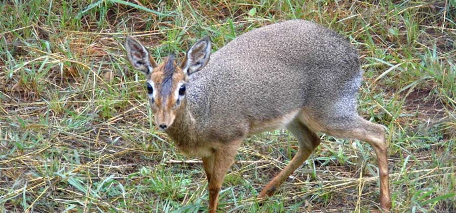
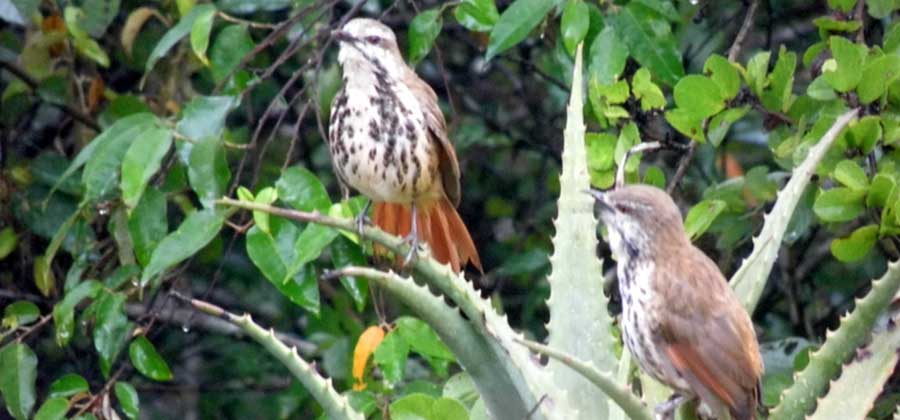
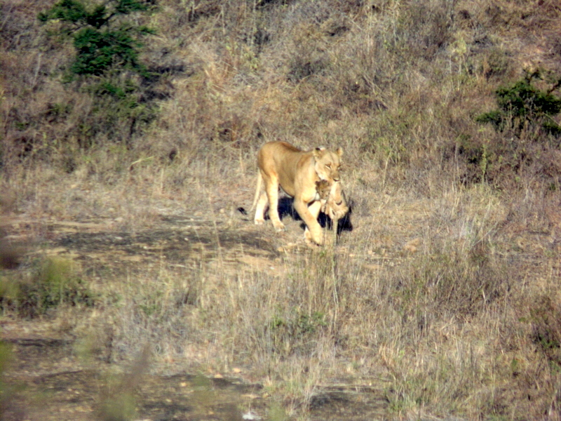

JACKALS OF NAIROBI NATIONAL PARK 1st March , Jackals , by Will Knocker Of the 3 species of jackals, versatile wild canids, in Kenya, the Black or Silver Backed jackal is the most easily seen in Nairobi National Park. A few years ago, there were very few of these cute canids in the Park, but their numbers seem to be increasing
DIKDIKS OF UZIMA. 23rd February , Antelopes, dikdik, silole sanctuary , by Will Knocker Dikdiks are fairly uncommon antelopes in NNP, but can be found in the Athi Basin towards the old Cheetah Gate, in their favoured habitat of dry scrub, where they can find concealment and low-lying browse
THE NIGHTINGALES WONDER
20th January , Birds, Nairobi National Park , by Will Knocker
On the main road in, there were Nightingales singing in the scrub, and others were at five other locations in the north, and on the
way to Ivory Burning Site was the first of only two Spotted Flycatchers

The Surviving Lions
We came across this lioness (collared poor thing: why?) with 3 cubs just below the Olomanyi Dam: the naughty cubs followed her when she needed to go hunting:
they were unceremoniously taken back by the scruff of the neck (the other 2 cubs followed behind…